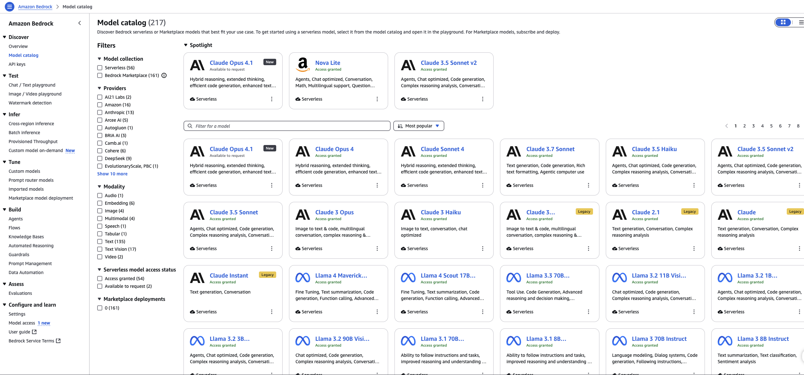
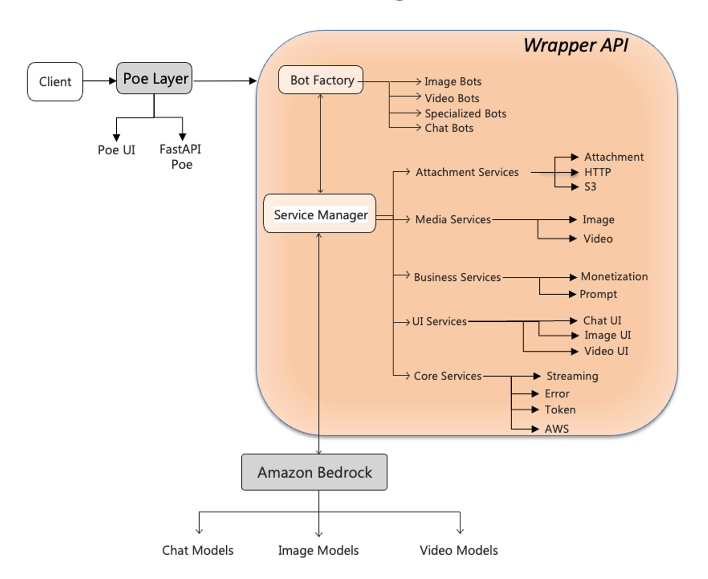

Unified multimodal access layer for Quora’s Poe using Amazon Bedrock
Authors: Gilbert V. Lepadatu and Nick Huber | Posted: 16/09/2025 | Categories: Amazon Bedrock, Customer Solutions, Foundation models, Generative AI
Organizations gain competitive advantage by deploying and integrating new generative AI models quickly through Generative AI Gateway architectures. This unified interface approach simplifies access to multiple foundation models (FMs), addressing a critical challenge: the proliferation of specialized AI models, each with unique capabilities, API specifications, and operational requirements. Rather than building and maintaining separate integration points for each model, the smart move is to build an abstraction layer that normalizes these differences behind a single, consistent API.
The AWS Generative AI Innovation Center and Quora recently collaborated on an innovative solution to address this challenge. Together, they developed a unified wrapper API framework that streamlines the deployment of Amazon Bedrock FMs on Quora’s Poe system. This architecture delivers a “build once, deploy multiple models” capability that significantly reduces deployment time and engineering effort, with real protocol bridging code visible throughout the codebase.
For technology leaders and developers working on AI multi-model deployment at scale, this framework demonstrates how thoughtful abstraction and protocol translation can accelerate innovation cycles while maintaining operational control.
In this post, we explore how the AWS Generative AI Innovation Center and Quora collaborated to build a unified wrapper API framework that dramatically accelerates the deployment of Amazon Bedrock FMs on Quora’s Poe system. We detail the technical architecture that bridges Poe’s event-driven ServerSentEvents protocol with Amazon Bedrock REST-based APIs, demonstrate how a template-based configuration system reduced deployment time from days to 15 minutes, and share implementation patterns for protocol translation, error handling, and multi-modal capabilities. We show how this “build once, deploy multiple models” approach helped Poe integrate over 30 Amazon Bedrock models across text, image, and video modalities while reducing code changes by up to 95%.
Quora and Amazon Bedrock
Poe.com is an AI system developed by Quora that users and developers can use to interact with a wide range of advanced AI models and assistants powered by multiple providers. The system offers multi-model access, enabling side-by-side conversations with various AI chatbots for tasks such as natural language understanding, content generation, image creation, and more.
The screenshot below showcases the user interface (UI) of Poe, the AI platform created by Quora. The image displays Poe’s extensive library of AI models, which are presented as individual “chatbots” that users can interact with.

Figure 1: Poe’s AI model library interface
The following screenshot provides a view of the Model Catalog within Amazon Bedrock, a fully managed service from Amazon Web Services (AWS) that offers access to a diverse range of foundation models (FMs). This catalog acts as a central hub for developers to discover, evaluate, and access state-of-the-art AI from various providers.

Figure 2: Model Catalog interface in Amazon Bedrock
Initially, integrating the diverse FMs available through Amazon Bedrock presented significant technical challenges for the Poe.com team. The process required substantial engineering resources to establish connections with each model while maintaining consistent performance and reliability standards. Maintainability quickly emerged as an extremely important consideration, as did the ability to efficiently onboard new models as they became available—both factors adding further complexity to the integration challenges.
Technical challenge: Bridging different systems
The integration between Poe and Amazon Bedrock presented fundamental architectural challenges that required innovative solutions. These systems were built with different design philosophies and communication patterns, creating a significant technical divide that the wrapper API needed to bridge.
Architectural divide
The core challenge stems from the fundamentally different architectural approaches of the two systems. Understanding these differences is essential to appreciating the complexity of the integration solution.
Poe operates on a modern, reactive, ServerSentEvents-based architecture through the FastAPI library (fastapi_poe). This architecture is stream-optimized for real-time interactions and uses an event-driven response model designed for continuous, conversational AI.
Amazon Bedrock, on the other hand, functions as an enterprise cloud service. It offers REST-based APIs with AWS SDK access patterns, SigV4 authentication requirements, AWS Region-specific model availability, and a traditional request–response interaction pattern with streaming options.
This fundamental API mismatch creates several technical challenges that the Poe wrapper API solves, as summarized in the following table.
Table: Integration challenges between Poe and Amazon Bedrock
| Challenge Category | Technical Issue | Source Protocol | Target Protocol | Integration Complexity |
|---|---|---|---|---|
| Protocol Translation | Converting between WebSocket-based protocol and REST APIs | WebSocket (bidirectional, persistent) | REST (request/response, stateless) | High – requires protocol bridging |
| Authentication Bridging | Connecting JWT validation with AWS SigV4 signing | JWT token validation | AWS SigV4 authentication | Medium – credential transformation needed |
| Response Format Transformation | Adapting JSON responses into expected format | Standard JSON structure | Custom format requirements | Medium – data structure mapping |
| Streaming Reconciliation | Mapping chunked responses to ServerSentEvents | Chunked HTTP responses | ServerSentEvents stream | High – real-time data flow conversion |
| Parameter Standardization | Creating unified parameter space across models | Model-specific parameters | Standardized parameter interface | Medium – parameter normalization |
API evolution and the Converse API
In May 2024, Amazon Bedrock introduced the Converse API, which offered standardization benefits that significantly simplified the integration architecture. Key capabilities include:
- A unified interface across diverse model providers (such as Anthropic, Meta, and Mistral).
- Conversation memory with consistent handling of chat history.
- Streaming and non-streaming modes through a single API pattern.
- Multimodal support for text, images, and structured data.
- Parameter normalization that reduces model-specific implementation quirks.
- Built-in content moderation capabilities.
The solution presented in this post uses the Converse API where appropriate, while also maintaining compatibility with model-specific APIs for specialized capabilities. This hybrid approach provides flexibility while taking advantage of the Converse API’s standardization benefits.
Solution overview
The wrapper API framework provides a unified interface between Poe and Amazon Bedrock models. It serves as a translation layer that normalizes the differences between models and protocols while maintaining the unique capabilities of each model.
The solution architecture follows a modular design that separates concerns and enables flexible scaling, as illustrated in the following diagram.

Figure 3: High-level architecture of the wrapper API framework between Poe and Amazon Bedrock
The wrapper API consists of several key components working together to provide a seamless integration experience:
-
Client
The entry point where users interact with AI capabilities through various interfaces (web browser, mobile app, APIs, and so on).
-
Poe layer, which includes:
- Poe UI – Handles user experience, including request formation, parameter controls, file uploads, and response visualization.
- Poe FastAPI – Standardizes user interactions and manages the communication protocol between clients and underlying systems. This acts as a protocol management layer, ensuring consistency in how data and responses are transmitted.
-
Bot Factory
A factory pattern mechanism that dynamically creates appropriate model handlers (bots) based on the requested model type—for example, chat models, image generation models, or video generation models.
This structure makes it easy to extend the system to support new model types or variants of existing models in the future. The following code snippet illustrates how the Bot Factory selects the appropriate model handler based on the configuration:
# From core/bot_factory.py - Actual implementation
class BotFactory:
"""
Factory for creating different types of bots.
Handles bot creation based on the bot type and configuration.
"""
@staticmethod
def create_bot(bot_config: BotConfig) -> PoeBot:
# Check if a custom bot class is specified
if hasattr(bot_config, 'bot_class') and bot_config.bot_class:
# Use the custom bot class directly
bot = bot_config.bot_class(bot_config)
# Explicitly ensure we're returning a PoeBot
if not isinstance(bot, PoeBot):
raise TypeError(f"Custom bot class must return a PoeBot instance, got {type(bot)}")
return bot
# Determine bot type based on configuration
if hasattr(bot_config, 'enable_video_generation') and bot_config.enable_video_generation:
# Video generation bot
if 'luma' in bot_config.bot_name:
from core.refactored_luma_bot import LumaVideoBot
return LumaVideoBot(bot_config)
else:
from core.refactored_nova_reel_bot import NovaReelVideoBot
return NovaReelVideoBot(bot_config)
elif hasattr(bot_config, 'enable_image_generation') and bot_config.enable_image_generation:
# Image generation bot
if hasattr(bot_config, 'model_id') and "stability" in bot_config.model_id.lower():
# Stability AI image generation bot
from core.refactored_image_stability_ai import AmazonBedrockImageStabilityAIBot
return AmazonBedrockImageStabilityAIBot(bot_config)
else:
# Other image generation bot (Titan, Canvas, etc.)
from core.refactored_image_bot_amazon import RefactoredAmazonImageGenerationBot
return RefactoredAmazonImageGenerationBot(bot_config)
else:
# Check if this is a Claude 3.7 model
if hasattr(bot_config, 'model_id') and "claude-3-7" in bot_config.model_id.lower():
return ClaudePlusBot(bot_config)
else:
# Default to standard chat bot
return RefactoredAmazonBedrockPoeBot(bot_config)
-
Service manager
Orchestrates the services needed to process requests effectively. It coordinates multiple specialized services, including:
- Token services – Managing token limits and counting.
- Streaming services – Handling real-time, streaming responses.
- Error services – Normalizing and handling errors consistently.
- AWS service integration – Managing API calls to Amazon Bedrock.
-
AWS services component
Converts responses from Amazon Bedrock format to Poe’s expected format and vice versa, handling streaming chunks, image data, and video outputs.
-
Amazon Bedrock layer
Amazon’s foundation model (FM) service that provides the actual AI processing capabilities and model hosting, including:
- Model diversity – Access to over 30 text models (such as Amazon Titan, Amazon Nova, Anthropic’s Claude, Meta’s Llama, Mistral, and others), as well as image and video models.
- API structure – Exposure of both model-specific APIs and the unified Converse API.
- Authentication – AWS SigV4 signing for secure access to model endpoints.
- Response management – Model outputs returned with standardized metadata and usage statistics.
The request processing flow in this unified wrapper API illustrates the orchestration required when bridging Poe’s event-driven ServerSentEvents protocol with Amazon Bedrock REST-based APIs, showing how multiple specialized services collaborate to deliver a seamless user experience.
The flow begins when a client sends a request through Poe’s interface, which then forwards it to the Bot Factory component. This factory pattern dynamically creates the appropriate model handler based on the requested model type—chat, image, or video generation. The Service Manager then orchestrates the various specialized services required to process the request effectively, including token management, streaming, and error handling.
The sequence diagram below illustrates the complete request processing flow:

Configuration template for rapid multi-bot deployment
The most powerful aspect of the wrapper API is its unified configuration template system, which supports rapid deployment and management of multiple bots with minimal code changes. This approach is central to the solution’s success in reducing deployment time.
The system uses a template-based configuration approach, combining shared defaults with model-specific overrides:
# Bot configurations using the template pattern
CHAT_BOTS = {
'poe-nova-micro': BotConfig(
# Identity
bot_name='poe-nova-micro',
model_id='amazon.nova-micro-v1:0',
aws_region=aws_config['region'],
poe_access_key='XXXXXXXXXXXXXXXXXXXXXX',
# Model-specific parameters
supports_system_messages=True,
enable_image_comprehension=True,
expand_text_attachments=True,
streaming=True,
max_tokens=1300,
temperature=0.7,
top_p=0.9,
# Model-specific pricing
enable_monetization=True,
pricing_type="variable",
input_token_cost_milli_cents=2,
output_token_cost_milli_cents=4,
image_analysis_cost_milli_cents=25,
# Generate rate card with model-specific values
custom_rate_card=create_rate_card(2, 4, 25),
# Include common parameters
**DEFAULT_CHAT_CONFIG
),
'poe-mistral-pixtral': BotConfig(
# Identity
bot_name='poe-mistral-pixtral',
model_id='us.mistral.pixtral-large-2502-v1:0',
aws_region=aws_config['region'],
poe_access_key='XXXXXXXXXXXXXXXXXXXXXX',
# Model-specific parameters
supports_system_messages=False,
enable_image_comprehension=False,
# ...
# Include common parameters
**DEFAULT_CHAT_CONFIG
)
}
This configuration-driven architecture offers several significant advantages:
- Rapid deployment – Adding new models requires only creating a new configuration entry rather than writing integration code. This is a key factor in the significant improvement in deployment time.
- Consistent parameter management – Common parameters are defined once in
DEFAULT_CHAT_CONFIGand inherited by bots, maintaining consistency and reducing configuration duplication. - Model-specific customization – Each model can have its own unique settings while still benefiting from the shared infrastructure.
- Operational flexibility – Parameters can be adjusted without code changes, allowing for quick experimentation and optimization.
- Centralized credential management – AWS credentials are managed in one place, improving security and simplifying updates.
- Region-specific deployment – Models can be deployed to different AWS Regions as needed, with Region settings controlled at the configuration level.
The BotConfig class provides a structured way to define bot configurations with type validation:
# From config/bot_config.py - Actual implementation (partial)
class BotConfig(BaseModel):
# Core Bot Identity
bot_name: str = Field(..., description="Name of the bot")
model_id: str = Field(..., description="Identifier for the AI model")
# AWS Configuration
aws_region: Optional[str] = Field(default="us-east-1", description="AWS region for deployment")
aws_access_key: Optional[str] = Field(default=None, description="AWS access key")
aws_secret_key: Optional[str] = Field(default=None, description="AWS secret key")
aws_security_token: Optional[str] = None
# Poe Configuration
poe_access_key: str = Field(..., description="Poe access key")
modal_app_name: str = Field(..., description="Modal app name")
# Capability Flags
allow_attachments: bool = Field(default=True, description="Whether to allow file attachments in Poe")
supports_system_messages: bool = Field(default=False)
enable_image_comprehension: bool = Field(default=False)
expand_text_attachments: bool = Field(default=False)
streaming: bool = Field(default=False)
enable_image_generation: bool = Field(default=False)
enable_video_generation: bool = Field(default=False)
# Inference Configuration
max_tokens: Optional[int] = Field(default=None, description="Maximum number of tokens to generate")
temperature: Optional[float] = Field(default=None, description="Temperature for sampling")
top_p: Optional[float] = Field(default=None, description="Top-p sampling parameter")
optimize_latency: bool = Field(default=False, description="Enable latency optimization with performanceConfig")
# Reasoning Configuration (Claude 3.7+)
enable_reasoning: bool = Field(default=False, description="Enable Claude's reasoning capability")
reasoning_budget: Optional[int] = Field(default=1024, description="Token budget for reasoning (1024-4000 recommended)")
# Monetization Configuration
enable_monetization: bool = Field(default=False, description="Enable variable pricing monetization")
custom_rate_card: Optional[str] = Field(
default=None,
description="Custom rate card for variable pricing in markdown format"
)
input_token_cost_milli_cents: Optional[int] = Field(
default=None,
description="Cost per input token in thousandths of a cent"
)
output_token_cost_milli_cents: Optional[int] = Field(
default=None,
description="Cost per output token in thousandths of a cent"
)
image_analysis_cost_milli_cents: Optional[int] = Field(
default=None,
description="Cost per image analysis in thousandths of a cent"
)
Advanced multimodal capabilities
One of the most powerful aspects of the framework is how it handles multimodal capabilities through simple configuration flags:
enable_image_comprehension– When set toTruefor text-only models like Amazon Nova Micro, Poe itself uses vision capabilities to analyze images and convert them into text descriptions that are sent to the Amazon Bedrock model. This enables even text-only models to classify images without having built-in vision capabilities.expand_text_attachments– When set toTrue, Poe parses uploaded text files and includes their content in the conversation, enabling models to work with document content without requiring special file handling capabilities.supports_system_messages– This parameter controls whether the model can accept system prompts, allowing for consistent behavior across models with different capabilities.
These configuration flags create a powerful abstraction layer that offers the following benefits:
- Extends model capabilities – Text-only models gain pseudo-multimodal capabilities through Poe’s preprocessing.
- Optimizes built-in features – True multimodal models can use their built-in capabilities for optimal results.
- Simplifies integration – Toggling capabilities is done via configuration switches instead of code changes.
- Maintains consistency – Provides a uniform user experience regardless of the underlying model’s native capabilities.
Next, we explore the technical implementation of the solution in more detail.
Protocol translation layer
The most technically challenging aspect of the solution was bridging between Poe’s API protocols and the diverse model interfaces available through Amazon Bedrock. The team accomplished this through a sophisticated protocol translation layer:
# From services/streaming_service.py - Actual implementation
def _extract_content_from_event(self, event: Dict[str, Any]) -> Optional[str]:
"""Extract content from a streaming event based on model provider."""
try:
# Handle Anthropic Claude models
if "message" in event:
message = event.get("message", {})
if "content" in message and isinstance(message["content"], list):
for content_item in message["content"]:
if content_item.get("type") == "text":
return content_item.get("text", "")
elif "content" in message:
return str(message.get("content", ""))
# Handle Amazon Titan models
if "delta" in event:
delta = event.get("delta", {})
if "text" in delta:
return delta.get("text", "")
# Handle other model formats
if "chunk" in event:
chunk_data = event.get("chunk", {})
if "bytes" in chunk_data:
# Process binary data if present
try:
text = chunk_data["bytes"].decode("utf-8")
return json.loads(text).get("completion", "")
except Exception:
self.logger.warning("Failed to decode bytes in chunk")
# No matching format found
return None
This translation layer handles subtle differences between models and makes sure that regardless of which Amazon Bedrock model is being used, the response back to Poe is consistent and follows Poe’s expected format.
Error handling and normalization
A critical aspect of the implementation is comprehensive error handling and normalization. The ErrorService provides consistent error handling across different models:
# Simplified example of error handling (not actual code)
class ErrorService:
def normalize_Amazon_Bedrock_error(self, error: Exception) -> str:
"""Normalize Amazon Bedrock errors into a consistent format."""
if isinstance(error, ClientError):
if "ThrottlingException" in str(error):
return "The model is currently experiencing high demand. Please try again in a moment."
elif "ValidationException" in str(error):
return "There was an issue with the request parameters. Please try again with different settings."
elif "AccessDeniedException" in str(error):
return "Access to this model is restricted. Please check your permissions."
else:
return f"An error occurred while communicating with the model: {str(error)}"
elif isinstance(error, ConnectionError):
return "Connection error. Please check your network and try again."
else:
return f"An unexpected error occurred: {str(error)}"
This approach ensures that users receive meaningful error messages regardless of the underlying model or error condition.
Token counting and optimization
The system implements sophisticated token counting and optimization to maximize effective use of models:
# From services/streaming_service.py - Actual implementation (partial)
# Calculate approximate JSON overhead
user_message_tokens = 0
for msg in conversation['messages']:
for content_block in msg.get('content', []):
if 'text' in content_block:
# Simple word-based estimation of actual text content
user_message_tokens += len(content_block['text'].split())
# Estimate JSON structure overhead (difference between total and content)
json_overhead = int((input_tokens - system_tokens) - user_message_tokens)
# Ensure we're working with integers for calculations
input_tokens_for_pct = int(input_tokens)
system_tokens_for_pct = int(system_tokens)
json_overhead_for_pct = int(json_overhead)
# Calculate percentage with float arithmetic and proper integer division
json_overhead_percent = (float(json_overhead_for_pct) / max(1, input_tokens_for_pct - system_tokens_for_pct)) * 100
...
This detailed token tracking enables accurate cost estimation and optimization, facilitating efficient use of model resources.
AWS authentication and security
The AwsClientService handles authentication and security for Amazon Bedrock API calls. This implementation provides secure authentication with AWS services while providing proper error handling and connection management.
Comparative analysis
The implementation of the wrapper API dramatically improved the efficiency and capabilities of deploying Amazon Bedrock models on Poe, as summarized below.
| Feature | Before (Direct API) | After (Wrapper API) |
|---|---|---|
| Deployment Time | Days per model | Minutes per model |
| Developer Focus | Configuration and plumbing | Innovation and features |
| Model Diversity | Limited by integration capacity | Extensive (across Amazon Bedrock models) |
| Maintenance Overhead | High (separate code for each model) | Low (configuration-based) |
| Error Handling | Custom per model | Standardized across models |
| Cost Tracking | Complex (multiple integrations) | Simplified (centralized) |
| Multimodal Support | Fragmented | Unified |
| Security | Varied implementations | Consistent best practices |
This comparison highlights the significant improvements achieved through the wrapper API approach, demonstrating the value of investing in a robust abstraction layer.
Performance metrics and business impact
The wrapper API framework delivered significant and measurable business impact across multiple dimensions, including increased model diversity, deployment efficiency, and developer productivity.
Poe can rapidly expand its model offerings, integrating dozens of Amazon Bedrock models across text, image, and video modalities. This expansion occurred over a period of weeks rather than the months it would have taken with the previous approach.
The following table summarizes the deployment efficiency metrics:
| Metric | Before | After | Improvement |
|---|---|---|---|
| New Model Deployment | 2–3 days | 15 minutes | 96× faster |
| Code Changes Required | 500+ lines | 20–30 lines | 95% reduction |
| Testing Time | 8–12 hours | 30–60 minutes | 87% reduction |
| Deployment Steps | 10–15 steps | 3–5 steps | 75% reduction |
These metrics were measured through direct comparison of engineering hours required before and after implementation, tracking actual deployments of new models.
The engineering team also observed a dramatic shift in focus from integration work to feature development, as shown in the table below:
| Activity | Before (% of time) | After (% of time) | Change |
|---|---|---|---|
| API Integration | 65% | 15% | −50% |
| Feature Development | 20% | 60% | +40% |
| Testing | 10% | 15% | +5% |
| Documentation | 5% | 10% | +5% |
Scaling and performance considerations
The wrapper API is designed to handle high-volume production workloads with robust scaling capabilities.
Connection pooling
To handle multiple concurrent requests efficiently, the wrapper implements connection pooling using aiobotocore. This allows it to maintain a pool of connections to Amazon Bedrock, reducing the overhead of establishing new connections for each request:
# From services/aws_service.py - Connection management
async def setup_client(self) -> None:
"""Initialize AWS client with proper configuration."""
async with self._client_lock:
try:
# Always clean up existing clients first to avoid stale connections
if self.Amazon_Bedrock_client:
await self.cleanup()
# Increase timeout for image generation
config = Config(
read_timeout=300, # 5 minutes timeout
retries={'max_attempts': 3, 'mode': 'adaptive'},
connect_timeout=30 # 30 second connection timeout
)
# Create the Amazon Bedrock client with proper error handling
self.Amazon_Bedrock_client = await self.session.create_client(
service_name="Amazon_Bedrock-runtime",
region_name=self.bot_config.aws_region,
aws_access_key_id=self.bot_config.aws_access_key,
aws_secret_access_key=self.bot_config.aws_secret_key,
aws_session_token=self.bot_config.aws_security_token,
config=config
).__aenter__()
except Exception as e:
self.Amazon_Bedrock_client = None
raise
Asynchronous processing
The entire framework uses asynchronous processing to handle concurrent requests efficiently:
# From core/refactored_chat_bot.py - Asynchronous request handling
async def get_response(self, query: QueryRequest) -> AsyncIterable[PartialResponse]:
try:
# Ensure AWS client is set up
await aws_service.setup_client()
# Validate and format the conversation
conversation = await conversation_service.validate_conversation(query)
# Process the request with streaming
if self.bot_config.streaming:
async for chunk in streaming_service.stream_Amazon_Bedrock_response(conversation, request_id):
yield chunk
else:
# Non-streaming mode
response_text, input_tokens, output_tokens = await streaming_service.non_stream_Amazon_Bedrock_response(conversation, request_id)
if response_text:
yield PartialResponse(text=response_text)
else:
yield PartialResponse(text=self.bot_config.fallback_response)
# Send done event for non-streaming mode
yield self.done_event()
except Exception as e:
# Error handling
error_message = error_service.log_error(e, request_id, "Error during request processing")
yield PartialResponse(text=error_message)
yield self.done_event()
Error recovery and retry logic
The system implements sophisticated error recovery and retry logic to handle transient issues:
# From services/streaming_service.py - Retry logic
max_retries = 3
base_delay = 1 # Start with 1 second delay
for attempt in range(max_retries):
try:
if not self.aws_service.Amazon_Bedrock_client:
yield PartialResponse(text="Error: Amazon Bedrock client is not initialized")
break
response = await self.aws_service.Amazon_Bedrock_client.converse_stream(**stream_config)
# Process response...
break # Success, exit retry loop
except ClientError as e:
if "ThrottlingException" in str(e):
if attempt < max_retries - 1:
delay = base_delay * (2 ** attempt) # Exponential backoff
await asyncio.sleep(delay)
continue
error_message = f"Amazon Bedrock API Error: {str(e)}"
yield PartialResponse(text=f"Error: {error_message}")
break
Performance metrics
The system collects detailed performance metrics to help identify bottlenecks and optimize performance:
# From services/streaming_service.py - Performance metrics
# Log token usage and latency
latency = time.perf_counter() - start_time
self.logger.info(
f"[{request_id}] Streaming Response Metrics:\n"
f" Time to First Token: {first_token_time:.4f} seconds\n"
f" Input Tokens: {input_tokens} (includes system prompt)\n"
f" Input Tokens for Billing: {input_tokens - system_tokens} (excludes system prompt)\n"
f" Output Tokens: {output_tokens}\n"
f" Total Tokens: {total_tokens}\n"
f" Amazon Bedrock Latency: {latency:.4f} seconds\n"
f" Latency Optimization: {'enabled' if hasattr(self.bot_config, 'optimize_latency') and self.bot_config.optimize_latency else 'disabled'}"
)
Security considerations
Security is a critical aspect of the wrapper implementation, with several key features to support secure operation.
JWT validation with AWS SigV4 signing
The system integrates JWT validation for Poe’s authentication with AWS SigV4 signing for Amazon Bedrock API calls:
- JWT validation – Ensures only authorized Poe requests can access the wrapper API.
- SigV4 signing – Ensures the wrapper API can securely authenticate with Amazon Bedrock.
- Credential management – AWS credentials are securely managed and not exposed to clients.
Secrets management
The system integrates with AWS Secrets Manager to securely store and retrieve sensitive credentials:
# From services/aws_service.py - Secrets management
@staticmethod
def get_secret(secret_name: str, region_name: str = "us-east-1") -> Dict[str, Any]:
"""
Retrieve a secret from AWS Secrets Manager.
Args:
secret_name: Name of the secret to retrieve
region_name: AWS region where the secret is stored
Returns:
Dict[str, Any]: The secret value as a dictionary
"""
# Create a Secrets Manager client
session = boto3.session.Session()
client = session.client(
service_name='secretsmanager',
region_name=region_name
)
try:
get_secret_value_response = client.get_secret_value(
SecretId=secret_name
)
except Exception as e:
logging.error(f"Error retrieving secret {secret_name}: {str(e)}")
raise
# Depending on whether the secret is a string or binary, one of these fields will be populated.
if 'SecretString' in get_secret_value_response:
import json
try:
# Explicitly annotate the return type for mypy
result: Dict[str, Any] = json.loads(get_secret_value_response['SecretString'])
return result
except json.JSONDecodeError:
# If not a JSON, return as a single-key dictionary
return {"SecretString": get_secret_value_response['SecretString']}
else:
import base64
decoded_binary_secret = base64.b64decode(get_secret_value_response['SecretBinary'])
return {"SecretBinary": decoded_binary_secret}
Secure connection management
The system implements secure connection management to help prevent credential leakage and ensure proper cleanup:
# From services/aws_service.py - Secure connection cleanup
async def cleanup(self) -> None:
"""Clean up AWS client resources."""
try:
if self.Amazon_Bedrock_client:
try:
await self.Amazon_Bedrock_client.__aexit__(None, None, None)
except Exception as e:
self.logger.error(f"Error closing Amazon Bedrock client: {str(e)}")
finally:
self.Amazon_Bedrock_client = None
self.logger.info("Successfully cleaned up AWS client resources")
except Exception as e:
# Even if cleanup fails, reset the references to avoid stale connections
self.Amazon_Bedrock_client = None
Troubleshooting and debugging
The wrapper API includes comprehensive logging and debugging capabilities to help identify and resolve issues. The system implements detailed logging throughout the request processing flow. Each request is assigned a unique ID that is used throughout the processing flow to enable tracing:
# From core/refactored_chat_bot.py - Request tracing
request_id = str(id(query))
start_time = time.perf_counter()
# Used in all log messages
self.logger.info(f"[{request_id}] Incoming request received")
Lessons learned and best practices
Through this collaboration, several important technical insights emerged that may benefit others undertaking similar projects:
- Configuration-driven architecture – Using configuration files rather than hard-coded model-specific behaviors proved enormously beneficial for maintenance and extensibility. This approach allowed new models to be added without code changes, significantly reducing the risk of introducing bugs.
- Protocol translation challenges – The most complex aspect was handling the subtle differences in streaming protocols between different models. Building a robust abstraction required careful consideration of edge cases and comprehensive error handling.
- Error normalization – Creating a consistent error experience across diverse models required sophisticated error handling that could translate model-specific errors into user-friendly, actionable messages. This improved both developer and end-user experiences.
- Type safety – Strong typing (using Python’s type hints extensively) was crucial for maintaining code quality across a complex codebase with multiple contributors. This practice reduced bugs and improved code maintainability.
- Security first – Integrating Secrets Manager from the start ensured credentials were handled securely throughout the system’s lifecycle, helping prevent potential security vulnerabilities.
Conclusion
The collaboration between the AWS Generative AI Innovation Center and Quora demonstrates how thoughtful architectural design can dramatically accelerate AI deployment and innovation. By creating a unified wrapper API for Amazon Bedrock models, the teams were able to reduce deployment time from days to minutes while expanding model diversity and improving user experience.
This approach—focusing on abstraction, configuration-driven development, and robust error handling—offers valuable lessons for organizations looking to integrate multiple AI models efficiently. The patterns and techniques demonstrated in this solution can be applied to similar challenges across a wide range of AI integration scenarios.
For technology leaders and developers working on similar challenges, this case study highlights the value of investing in flexible integration frameworks rather than point-to-point integrations. The initial investment in building a robust abstraction layer pays dividends in long-term maintenance and capability expansion.
To learn more about implementing similar solutions, explore:
- AWS Well-Architected Framework – Best practices for building secure, high-performing, resilient, and efficient infrastructure.
- Amazon Bedrock Developer Guide – Detailed information on working with foundation models (FMs).
- AWS Generative AI Innovation Center – Support for innovative generative AI projects.
- AWS Prescriptive Guidance for LLM Deployment – Best practices for deploying large language models (LLMs).
The AWS Generative AI Innovation Center and Quora teams continue to collaborate on enhancements to this framework, ensuring Poe users have access to the latest and most capable AI models with minimal deployment delay.
About the authors
 |
Dr. Gilbert V. Lepadatu is a Senior Deep Learning Architect at the AWS Generative AI Innovation Center, where he helps enterprise customers design and deploy scalable, cutting-edge GenAI solutions. With a PhD in Philosophy and dual Master’s degrees, he brings a holistic and interdisciplinary approach to data science and AI. |
|---|---|
 |
Nick Huber is the AI Ecosystem Lead for Poe (by Quora), where he is responsible for ensuring high-quality and timely integrations of leading AI models onto the Poe platform. |